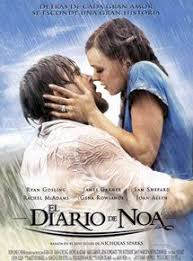

Home
Estrenos
Generos
Recomendadas
Series
Películas Recomendadas para Ver en tu Vida (por Género)
Aventura
Cómicas
Terror
Acción
Romanticas
Fantasia
Titanic
El diario de Noa
Cuestión de tiempo

Otra de las ganadoras de 11 Oscars, y basada en hechos reales, James Cameron decide representar el famoso hundimiento del Titanic a través de una intrahistoria de amor entre Jack y Rose. Jack es un joven que ha entrado de casualidad como pasajero en el barco y Rose, una muchacha acomodada que va a casarse con un hombre de dinero.
Un hombre mayor llamado Noa comienza a contarle su historia de amor a una mujer que le acompaña en un parque. La mujer queda atónica ante las explicaciones que le da el hombre, y ante la belleza de la historia. Más sorprendida queda aun cuando se da cuenta de que ella es esa mujer y que padece Alzheimer.
Un joven que esconde el poder de poder viajar al pasado intenta vivir cambiando a su antojo el destino. Gracias a este don, consigue encontrar a Mary, una joven de la que se enamorará profundamente para vivir junto a ella el resto de sus días, no sin antes pasar por una serie de problemas que toda pareja ha de tener.